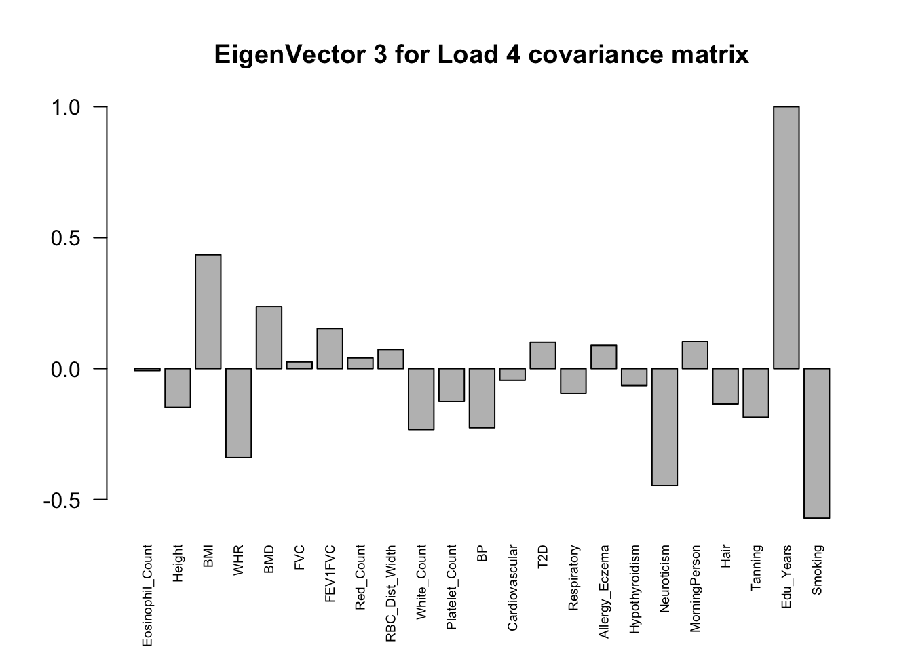
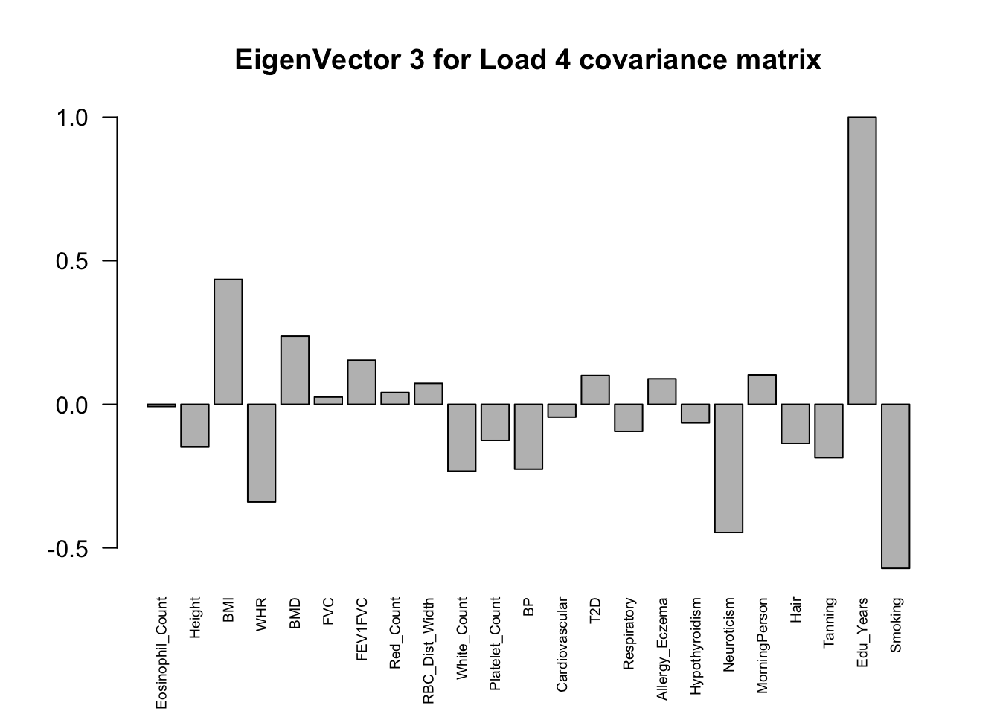

UKBioBank MASH
Yuxin Zou
2018-6-27
Last updated: 2018-07-06
Code version: 8389b57
Loading required package: ashrPackage 'mclust' version 5.4
Type 'citation("mclust")' for citing this R package in publications.
Attaching package: 'mclust'The following object is masked from 'package:ashr':
densUKBioBank Strong data
data = readRDS('../data/UKBioBank/StrongData.rds')Estimate se based on p values
# Adjust p value == 0
data$p[data$p == 0] = 1e-323Fit EZ model directly to the Z scores, with standard errors of the non-missing Z scores set to 1 and the missing ones set to 10^6.
mash.data = mash_set_data(Bhat = data$beta, pval = data$p, alpha = 1)
Zhat = mash.data$Bhat; Shat = mash.data$Shat
missing = is.na(Zhat)
Shat[missing] = 10^6
Zhat[missing] = 0
data.EZ = mash_set_data(Zhat,Shat)Estimate Covariance
# column center
Z.center = apply(Zhat, 2, function(x) x - mean(x))Flash on centered Z
\[ Z = LF' + E \] Z is an \(n \times p\) observed centered data, F is a \(p\times k\) matrix of factors, L is an \(n \times k\) matrix of loadings.
Results from Flash_UKBio
fmodel = readRDS('../output/Flash_UKBio_strong.rds')Suppose the rows of L come from a mixture of multivariate normals, with covariances \(\Sigma_1,\dots,\Sigma_M\) (each one a K by K matrix). \[ l_{i \cdot} \sim \sum_{j=1}^{M} N(\mu_{j}, \Sigma_{j}) \] Then the rows of \(LF'\) come from a mixture of multivariate normals \[ Fl_{i\cdot} \sim \sum_{j=1}^{M} N(F\mu_{j}, F\Sigma_{j}F') \] We estimate the covariance matrix as \(F(\Sigma_{j}+\mu_{j}\mu_{j}')F′\).
Cluster loadings:
loading = fmodel$EL[,1:18]
colnames(loading) = paste0('Factor',seq(1,18))
mod = Mclust(loading)
summary(mod$BIC)Best BIC values:
VVV,9 VVV,8 VVI,9
BIC -1836091 -1847525.77 -1852520.94
BIC diff 0 -11434.81 -16429.98U_list = alply(mod$parameters$variance$sigma,3)
mu_list = alply(mod$parameters$mean,2)
ll = list()
for (i in 1:length(U_list)){
ll[[i]] = U_list[[i]] + mu_list[[i]] %*% t(mu_list[[i]])
}
Factors = fmodel$EF[,1:18]
U.loading = lapply(ll, function(U){Factors %*% (U %*% t(Factors))})
names(U.loading) = paste0('Load', "_", (1:length(U.loading)))
# rank 1
Flash_res = flash_get_lf(fmodel)
U.Flash = c(mashr::cov_from_factors(t(as.matrix(Factors)), "Flash"),
list("tFlash" = t(Flash_res) %*% Flash_res / nrow(Z.center)))PCA
U.pca = cov_pca(data.EZ, 5)svd currently performed on Bhat; maybe should be Bhat/Shat?Extreme Deconvolution
U.dd = c(U.pca, U.loading, U.Flash, list('XX' = t(data.EZ$Bhat) %*% data.EZ$Bhat / nrow(data.EZ$Bhat)))
U.ed = cov_ed(data.EZ, U.dd)
saveRDS(U.ed, '../output/CovED_UKBio_strong_Z.rds')U.ed = readRDS('../output/CovED_UKBio_strong_Z.rds')Canonical
U.c = cov_canonical(data.EZ)Mash model
Read random data
data.rand = readRDS('../data/UKBioBank/RandomData.rds')
# Estimate se based on p values
# Adjust p value == 0
data.rand$p[data.rand$p == 0] = 1e-323
mash.data.rand = mash_set_data(Bhat = data.rand$beta, pval = data.rand$p, alpha = 1)
Zhat = mash.data.rand$Bhat; Shat = mash.data.rand$Shat
missing = is.na(Zhat)
Shat[missing] = 10^6
Zhat[missing] = 0
data.rand.EZ = mash_set_data(Zhat,Shat)
Vhat = estimate_null_correlation(data.rand.EZ)data.rand.EZ.V = mash_set_data(data.rand.EZ$Bhat, data.rand.EZ$Shat, V = Vhat)
mash.model = mash(data.rand.EZ.V, c(U.c, U.ed), outputlevel = 1)
saveRDS(mash.model, '../output/UKBio_mash_model.rds')mash.model = readRDS('../output/UKBio_mash_model.rds')The log-likelihood of fit is
get_loglik(mash.model)[1] -5357356Here is a plot of weights learned:
options(repr.plot.width=12, repr.plot.height=4)
barplot(get_estimated_pi(mash.model), las = 2, cex.names = 0.7)The founded correlations:
From the empirical correlation matrix, the metabolic disorder diseases are correlated (BMI, Blood Pressure, Cardiovascular and Type 2 Diabetes), which agrees the Factor 2 in the flash result. The eosinophil cell count is positively correlated with white cell count, since eosinophil cell is a variety of white blood cells. Eosinophil cell cpunt is also positively correlated with respiratory disease. Having respiratory disease decreases FEV1FVC ratio. Years of education is negatively correlated with smoking status. There must be some strong environmental factors that are affecting these phenotypes together. The associations from the mash result here may not the pure genetic associations. Moreover, from the load_4 covariance matrix, neuroticism and smoking are highly correlated here (0.71). Neurotic people may smoke more and finish their school life earlier.
ED_XX:
x <- cov2cor(mash.model$fitted_g$Ulist[["ED_XX"]])
colnames(x) <- colnames(get_lfsr(mash.model))
rownames(x) <- colnames(x)
corrplot::corrplot(x, method='color', cl.lim=c(-1,1), type='upper', addCoef.col = "black", tl.col="black", tl.srt=45, col=colorRampPalette(rev(c("#D73027","#FC8D59","#FEE090","#FFFFBF", "#E0F3F8","#91BFDB","#4575B4")))(128))The top eigenvalues:
svd.out = svd(mash.model$fitted_g$Ulist[["ED_XX"]])
v = svd.out$v
colnames(v) = colnames(get_lfsr(mash.model))
rownames(v) = colnames(v)
options(repr.plot.width=10, repr.plot.height=5)
for (j in 1:6)
barplot(v[,j]/v[,j][which.max(abs(v[,j]))], cex.names = 0.6,
las = 2, main = paste0("EigenVector ", j, " for empirical covariance matrix"))
ED_load_4
x <- cov2cor(mash.model$fitted_g$Ulist[["ED_Load_4"]])
colnames(x) <- colnames(get_lfsr(mash.model))
rownames(x) <- colnames(x)
corrplot::corrplot(x, method='color', cl.lim=c(-1,1), type='upper', addCoef.col = "black", tl.col="black", tl.srt=45, col=colorRampPalette(rev(c("#D73027","#FC8D59","#FEE090","#FFFFBF", "#E0F3F8","#91BFDB","#4575B4")))(128))The top eigenvalues:
svd.out = svd(mash.model$fitted_g$Ulist[["ED_Load_4"]])
v = svd.out$v
colnames(v) = colnames(get_lfsr(mash.model))
rownames(v) = colnames(v)
options(repr.plot.width=10, repr.plot.height=5)
for (j in 1:3)
barplot(v[,j]/v[,j][which.max(abs(v[,j]))], cex.names = 0.6,
las = 2, main = paste0("EigenVector ", j, " for Load 4 covariance matrix")) 

Posterior
data.strong = mash_set_data(data.EZ$Bhat, data.EZ$Shat, V = Vhat)
mash.model$result = mash_compute_posterior_matrices(mash.model, data.strong)There are 60069 significant snps.
Pairwise sharing (Shared by magnitude when sign is ignored):
x <- get_pairwise_sharing(mash.model, FUN = abs)
colnames(x) <- colnames(get_lfsr(mash.model))
rownames(x) <- colnames(x)
clrs=colorRampPalette(rev(c('darkred', 'red','orange','yellow','cadetblue1', 'cyan', 'dodgerblue4', 'blue','darkorchid1','lightgreen','green', 'forestgreen','darkolivegreen')))(200)
corrplot::corrplot(x, method='color', type='upper', addCoef.col = "black", tl.col="black", tl.srt=45, diag = FALSE, col=clrs, cl.lim = c(0,1))
Pairwise sharing (Shared by magnitude and sign):
x <- get_pairwise_sharing(mash.model)
colnames(x) <- colnames(get_lfsr(mash.model))
rownames(x) <- colnames(x)
clrs=colorRampPalette(rev(c('darkred', 'red','orange','yellow','cadetblue1', 'cyan', 'dodgerblue4', 'blue','darkorchid1','lightgreen','green', 'forestgreen','darkolivegreen')))(200)
corrplot::corrplot(x, method='color', type='upper', addCoef.col = "black", tl.col="black", diag=FALSE,tl.srt=45, col=clrs, cl.lim = c(0,1))
Session information
sessionInfo()R version 3.4.4 (2018-03-15)
Platform: x86_64-apple-darwin15.6.0 (64-bit)
Running under: macOS High Sierra 10.13.5
Matrix products: default
BLAS: /Library/Frameworks/R.framework/Versions/3.4/Resources/lib/libRblas.0.dylib
LAPACK: /Library/Frameworks/R.framework/Versions/3.4/Resources/lib/libRlapack.dylib
locale:
[1] en_US.UTF-8/en_US.UTF-8/en_US.UTF-8/C/en_US.UTF-8/en_US.UTF-8
attached base packages:
[1] stats graphics grDevices utils datasets methods base
other attached packages:
[1] colorRamps_2.3 ggplot2_2.2.1 lattice_0.20-35 plyr_1.8.4
[5] mclust_5.4 mashr_0.2-10 ashr_2.2-7 flashr_0.5-11
loaded via a namespace (and not attached):
[1] Rcpp_0.12.17 compiler_3.4.4 pillar_1.2.2
[4] git2r_0.21.0 iterators_1.0.9 tools_3.4.4
[7] corrplot_0.84 digest_0.6.15 evaluate_0.10.1
[10] tibble_1.4.2 gtable_0.2.0 rlang_0.2.0
[13] Matrix_1.2-14 foreach_1.4.4 yaml_2.1.19
[16] parallel_3.4.4 mvtnorm_1.0-7 ebnm_0.1-11
[19] stringr_1.3.0 knitr_1.20 rprojroot_1.3-2
[22] grid_3.4.4 rmarkdown_1.9 rmeta_3.0
[25] magrittr_1.5 backports_1.1.2 scales_0.5.0
[28] codetools_0.2-15 htmltools_0.3.6 MASS_7.3-50
[31] assertthat_0.2.0 softImpute_1.4 colorspace_1.3-2
[34] stringi_1.2.2 lazyeval_0.2.1 pscl_1.5.2
[37] doParallel_1.0.11 munsell_0.4.3 truncnorm_1.0-8
[40] SQUAREM_2017.10-1This R Markdown site was created with workflowr